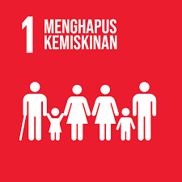
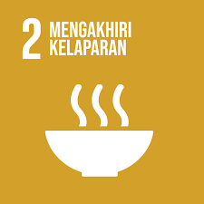
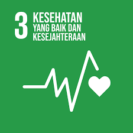
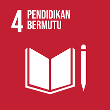
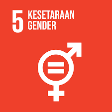
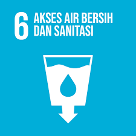
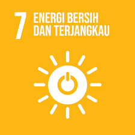
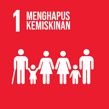
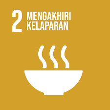
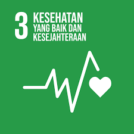
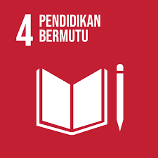
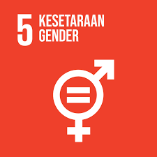
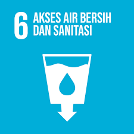
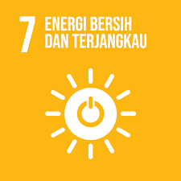

 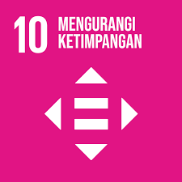
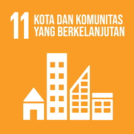
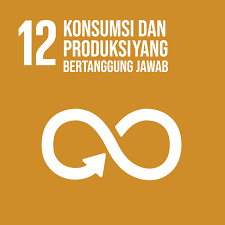
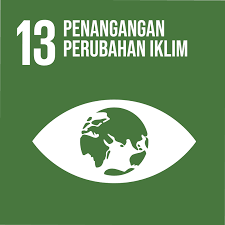
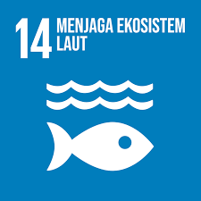
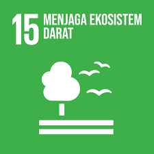
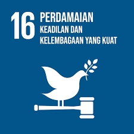
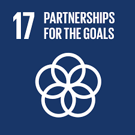
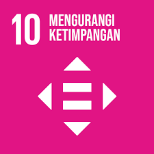
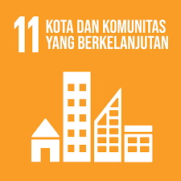
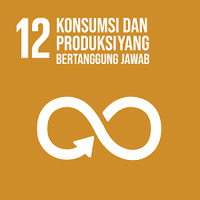
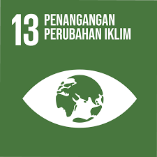
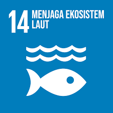
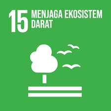
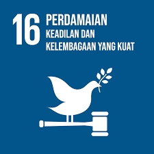
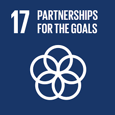
SDGs atau SUstainable Development Goals atau Tujuan Pembangunan Berkelanjutan adalah serangkaian 17 tujuah yang dicanangkan oleh perserikatang bangsa bangsa atau yang kita kenal sebagai PBB sebagai gambaran untuk mencapai masa depan yang lebih baik dan terang bagi semua manusia. Organisasi ini dibentuk pada sejak tahun 2012 untuk menggantikan MDGs dan mencapai tujuan lingkungan sosial ekonomi. SDGs terdiri dari 17 tujuan dan 169 target total untuk periode tahun 2015 sampai dengan tahun 2030 yang berfokus kepada pengatasan kemiskinan, kelaparan, dan keseahtan yang baik bagi semua warga negara baik dari negara apapun.
1. Tanpa kemiskinan
2. tanpa kelaparan
3. Kehidupan sehat dan sejahtera
4. Pendidikan berkualitas
5. Kesetaraan gender
6. Air bersih dan sanitasi layak
7. Energi bersih dan terjangkau
8. Pekerjaan layak dan pertumbuhan ekonomi
9. Industri, Inovasi, dan infrastruktur
10. Berkurangnya kesenjangan
11. Kota dan pemukiman yang berkelanjutan
12. Konsumsi dan produksi yang bertanggung jawab
13. Penanganan perubahan iklim
14. Ekosistem Lautan
15. Ekosistem daratan
16. Perdamaian, keadilan, dan kelembangaan yang tangguh
17. Kemitraan untuk mencapai tujuan
Ketujuhbelas tujuan SDGs ini saling terkait dan saling mendukung untung menangani berbagai tantangan global yang sedang dihadapi oleh banyak sekali negara. Masalah - masalah yang sudah bisa digolongkan sebagai masalah masalah besar dunia. Ketujuhbelas tujuan ini dibentuk bagi kebaikan semua manusia secara bersamaan di bumi ini supaya kita semua memiliki masa depan yang lebih baik dan berkelanjutan dibandingkan masa depan yang hancur dan tidak lagi layak untuk dihidupi oleh manusia, untuk melindungi bumi dari segala polusi yang dibuat oleh manusia untuk emmperbaiki semua maslah - masalah tersebut secara perlahan - lahan sebelum semuanya sudah telat.